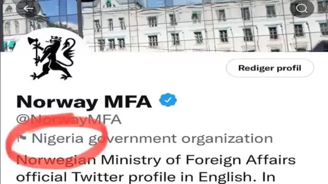

Shah Rukh Khan talked about his kids, Suhana Khan, Aryan Khan and AbRam Khan in several tweets. He hosted a ‘Ask Me Anything’ session on Twitter.
By HT Entertainment Desk Shah Rukh Khan took to Twitter and hosted an ‘Ask me anything’ session with his fans. He told them, "Come all let’s do an #AskSRK for 15 minutes. Then work beckons.” Replying to many questions, he touch upon several topics, ranging from his health to his family and kids. Also read: Shah Rukh Khan calls Pathaan ‘patriotic’ amid boycott calls